Tolstoy
How Tolstoy grew customer support from one agent to an 11-person team with xFusion.

About Tolstoy
Tolstoy is a video commerce platform used by more than 5,000 brands, including Culture Kings and LSKD. The company is based in Israel. They built their name on shoppable video that drops into the customer journey without slowing the site down.
The product is built around short-form video. Brands use Tolstoy to create shoppable video flows that connect shoppers to products. The numbers back it up. Tolstoy delivers four times more time spent on a site, and doubles the chance of repeat purchases. The platform also gives brands data on what shoppers do, which helps them target better and convert more buyers.
By the summer of 2022, Tolstoy was growing fast. The leadership team needed a support partner who could keep up without becoming one more thing to manage.
An absolute game-changer. We grow faster and more professionally than we ever could alone.
Working with the xFusion team enabled us to scale customer support from a single agent to a six-person team handling Tier 1 and Tier 2 work. The partnership has been so valuable that our Shopify app ranking jumped 90 points after a wave of 5-star reviews tied to better support. I can't praise the team enough.
The challenge
When Tolstoy's leadership team first sat down with xFusion co-founder Jim in the summer of 2022, the company was buried. Support volume was rising fast. The one person handling the inbox was leaving, and there was no plan B.
The gap was bigger than one role. Tolstoy needed help with email, live chat, onboarding for new brands, customer-facing docs, helpdesk fixes, and client calls. Every piece of that work touched the customer experience. Every piece had been getting half the attention it needed while the team focused on shipping product.
The leadership team did not want to start a hiring push, train a new team, and add more management work on top of everything else. They wanted a partner who could take over the whole support function. They wanted that partner to run it the way Tolstoy would run it, without making the founders the back-up reps.
The bar was high. Tolstoy's brand is built on real, human connection between brands and shoppers. Whoever handled support had to carry that voice in every reply.
The solution
xFusion started with the most urgent piece. We put a coverage plan in place before the internal team member's last day. From there, the partnership grew fast.
The first xFusion agent learned onboarding by walking new brands through the product over video calls. Once the rhythm settled in, xFusion rebuilt the helpdesk under the day-to-day work. Saved replies. Cleaner workflows. Internal docs for the team. Help articles for customers. None of that was in place in any organized form before the partnership started.
As Tolstoy landed bigger clients, xFusion built a second-level team called "Solutions Engineers." This group handled the harder tickets: escalations, bug triage, tough troubleshooting, and custom-code requests from larger clients. They also followed up on new client activations to make sure every tag, escalation, and request matched the client's setup. The xFusion Solutions Engineer lead worked directly with Tolstoy's Head of Growth to keep the activations process running smoothly.
The setup Tolstoy and xFusion landed on was simple. One team. One group covering front-line support, harder tickets, onboarding, docs, and reports. All managed by xFusion through a dedicated account manager. All in Tolstoy's voice.
Shoutouts to xFusion's team members from Tolstoy leadership
What Tolstoy's leadership team has to say about working with the xFusion team day-to-day.
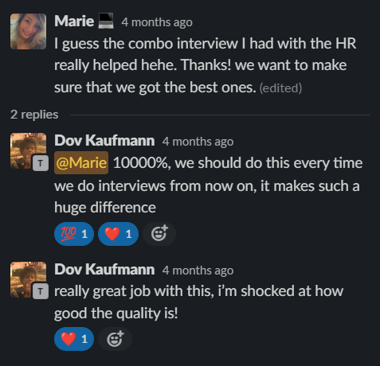
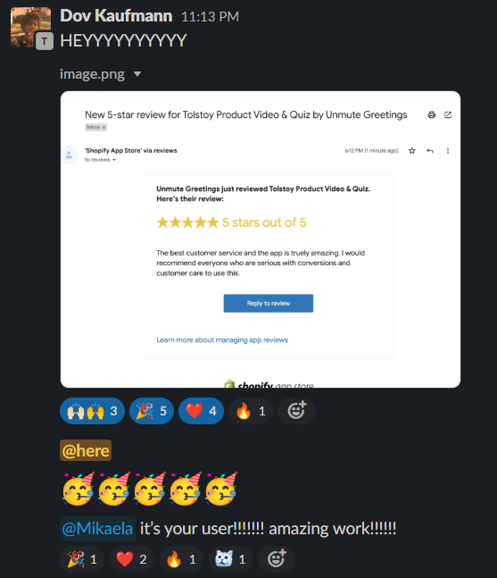
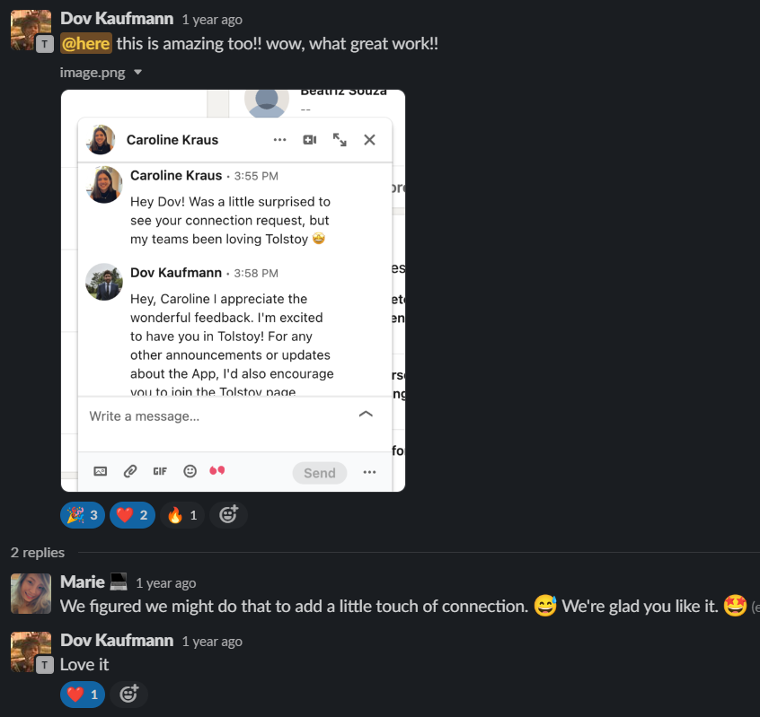
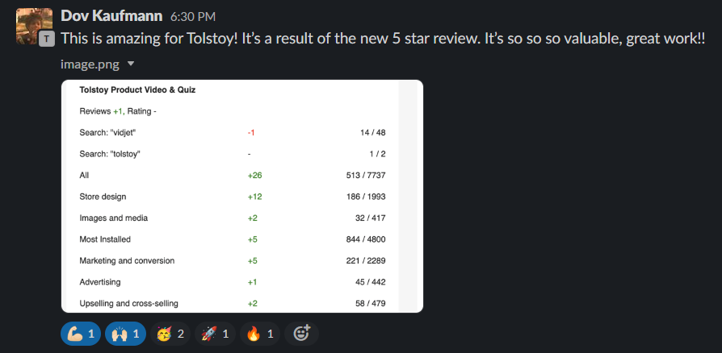
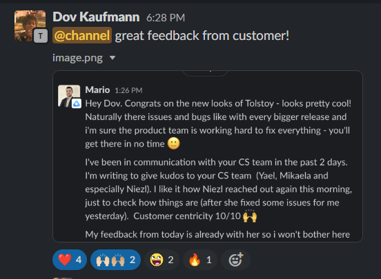
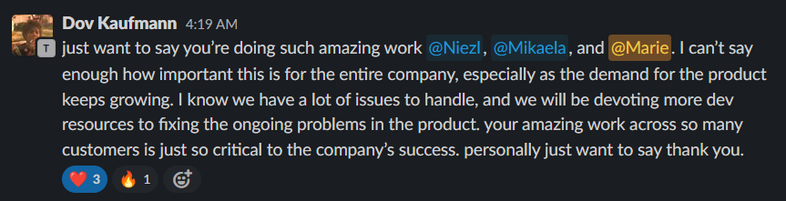
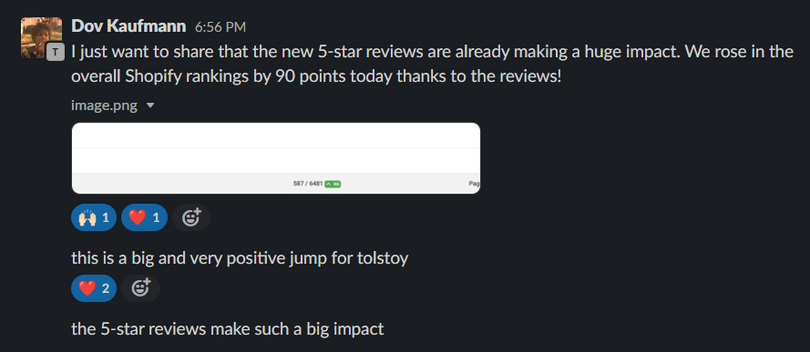
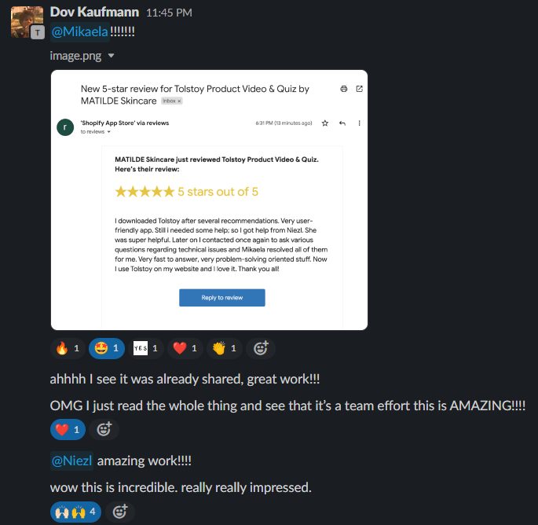
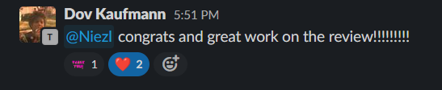
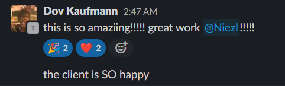
Shoutouts from Tolstoy customers about xFusion's team members
5-star Shopify app reviews where customers called out xFusion team members by name.
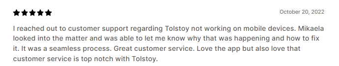
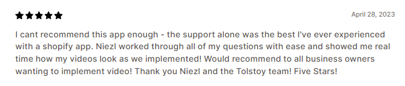
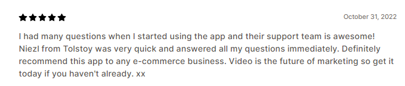
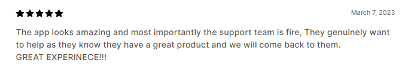
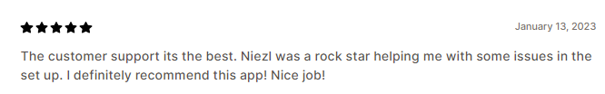
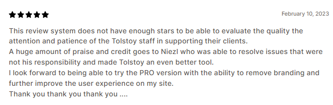
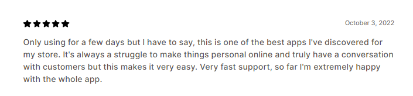
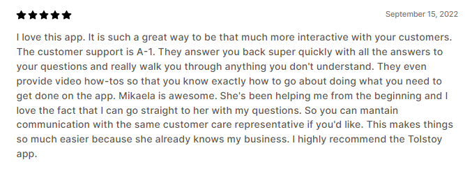
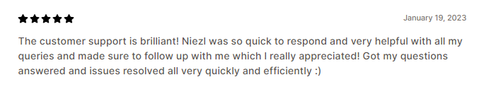
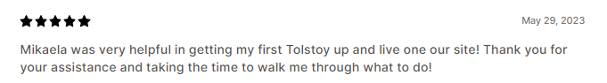
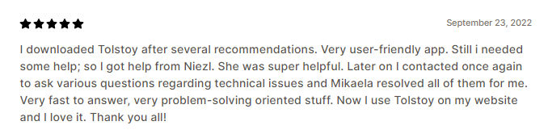
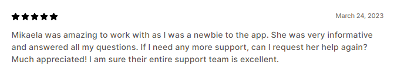
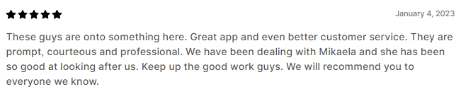
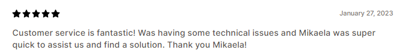
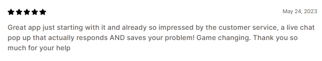
The results
The partnership started on August 18, 2022. Within the first few months, the xFusion team and Dov had a working KPI plan in place. Weekly reports were running. The help article library was getting built from scratch. Customers noticed.
The clearest signal came from the Shopify app store. As support got better, Tolstoy started getting 5-star reviews that praised the support, and the app's ranking jumped 90 points. For a video commerce platform fighting for visibility on Shopify, that kind of jump changes how many new brands find and trust the product.
The numbers under the hood got better too. Before xFusion, about one in three tickets had to be reopened, the usual sign that the first reply did not solve the problem. After xFusion stabilized the workflow and the team got comfortable with the product, that reopen rate dropped sharply. In a single month, March 2023, the xFusion team handled 584 tickets on their own. No founder approvals. No escalations to internal Tolstoy staff. Just a trained team running the function.
The business impact added up. Tolstoy's leadership stopped thinking about support as a problem to solve. The development team got back the time they had been spending on customer issues. The leadership team got room to focus on the next phase of growth. The customer experience kept getting stronger as the xFusion team added better docs, faster routing, and a tighter match with Tolstoy's voice.
Want to see if we can help you too?
If your customer support is starting to slip, or you are about to lose the one person holding it together, we can help. We will recruit, vet, place, train, and manage a senior, AI-trained support agent for your business. You will work with them for 30 days before paying anything. If you are not happy, you walk away free.
Book a Discovery Call30 minutes. No commitment. No credit card. You'll talk directly with our founding team.